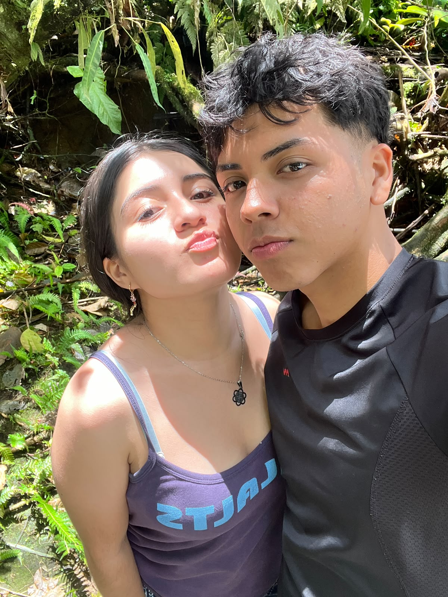

Un pequeño
detalle para usted
Hay cosas que no necesitan ser apresuradas. A veces lo más bonito es disfrutar el momento
Ver el detalle ↓
Un momento bonito, una foto para guardar y un recuerdo que aprecio :3 ♡
Encomienda al Señor tus obras, y tus pensamientos serán afirmados.
Sin prisas, sin forzar nada.
Me gusta la idea de disfrutar cada momento, seguir conociéndonos, compartir y dejar que todo suceda a su tiempo y Dios siempre nos guie aunque lleguen a pasar muchas cosas en nuestras vidas quiero siempre que vayamos en buen camino, y cada vez aprender y siempre buscar el reino de Dios y lo demás será por añadidura, quiero y si Dios permite cada vez conocerle a usted , también en vida personal hay que tener y bueno crecer en fe , todo lleva proceso , también valores y humildad , hay que crecer cada vez más de manera adecuada y se que no somos perfectos pero estamos para seguir avanzando por eso nuestro Padre nos brinda cada dia más de vida y disfrutar de la vida, valorar los momentos, familiares , el tiempo, cada parte de esta vida que Dios nos dio, y sonreirle a la vida porque entiendo que es difícil pero no nos hace menos llegarnos a sentir mal , ya hablo en vida personal , unos consejos que me gusta brindar, bueno sigo , entonces sonreirle a esta vida , tener buenos recuerdos , que nos llegemos a sentir mal no nos hace menos , ni llorar , ni fracasar, el fracaso es parte de el buen camino al éxito, si nos caemos pues levantarnos aunque lleguemos a pensar que no podemo , pero si se puede,de mi parte le deseo lo mejor en su camino como profesional en lo que es Agropecuaria, y en su vida, y tambien a sus seres queridos Dios siempre va a estar con usted y con todas las personas de este mundo , somos pecadores incluso más cosas malas que hacemos pero Dios siempre esta con nosotros, siempre nos perdona y nos acepta y nos da muchas oportunidades en nuestras vidas , ese el más grande y verdadero Amor , y único el de nuestro Padre , entonces a vivir la vida , seguir para adelante, hacer lo que nos gusta obvio algo adecuado , y trabajar y disfrutar el proceso. Dios la bendiga siempre y a todos ♡.
No quiero apresurar nada. Quiero simplemente disfrutar esta etapa, conocerte cada vez más y valorar cada momento que podamos compartir.
Que Dios vaya por delante.
Porque cuando ponemos a Dios en el centro, podemos caminar con calma, valorar lo que tenemos y confiar en lo que venga.
Si Dios permite que nuestros caminos sigan juntos, quiero disfrutar cada momento, sin apresurar nada y con mucho cariño.